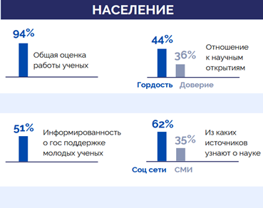
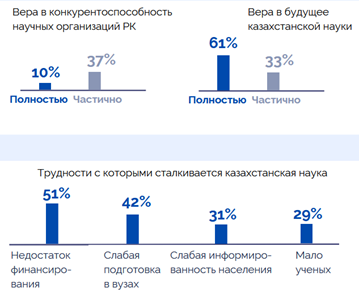
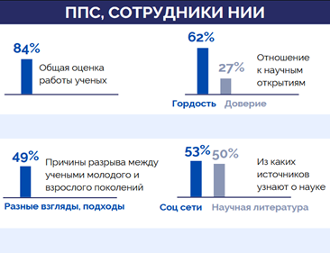
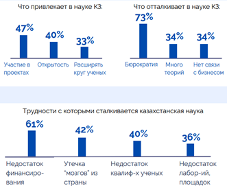
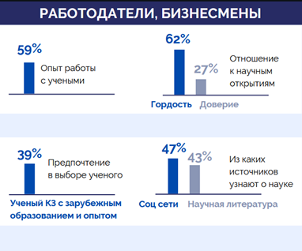
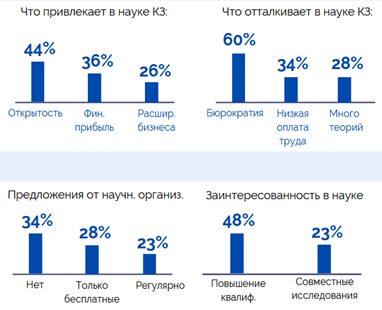

Проведено социологическое исследование по информационно-аналитическому сопровождению науки на тему «Внесение предложений по улучшению общественного понимания и высокой оценки науки и научного администрирования».
В качестве респондентов были отобраны:
1) население г. Алматы в возрасте от 18 до 60 лет (1003 чел.);
2) ППС вузов и сотрудники НИИ РК (2506 чел.), из них:
магистры наук (39%), далее идут кандидаты наук (25%), PhD (15%), доктора наук (15%), а также сотрудники без ученой степени (15%). Представители южного региона страны представляют большинство респондентов (58%), т.к. в данном регионе расположены вузы и НИИ г. Алматы с большим контингентом педагогов и научных работников; в остальных регионах доля участников опроса составляет в среднем 10,5%.
3) работодатели и представители бизнес среды (313 чел.).
Для проведения исследования была использована случайная выборка респондентов, которые обладают схожими переменными как уровень образования, доходов, стиль и культура жизни, место проживания и возраст.
Для проведения опроса была составлена анкета, состоящая из ключевых вопросов, распределенных по 3 блокам:
1-й блок – отношение к ученым;
2-й блок – отношение к науке;
3й блок – отношение к научным организациям.
В г. Алматы опрос проводился в офлайн формате, а среди ППС и представителей бизнеса – онлайн (Google Forms). Статистический анализ проводился с помощью программ MS Excel, SPSS.
Цель исследования: выявление субъективных мнений населения, представителей академической и бизнес среды Казахстана относительно работы ученых, определение уровня доверия казахстанской науке, ожиданий от научных организаций, разработка рекомендаций по развитию науки в стране.
Задачи исследования: 1) идентификация основных источников научной информации, которым доверяют респонденты; 2) изучение влияния мировой науки на развитие бизнеса и работы в Казахстане; 3) оценка перспектив и возможностей, которые казахстанская наука может предложить для решения общественных проблем, улучшения бизнес-процессов или развития конкретных направлений работы; 4) изучение отношения к научным открытиям и изобретениям казахстанских ученых; 5) изучение факторов, привлекающих и отталкивающих ППС, работодателей и представителей бизнес среды от науки в Казахстане; 6) оценка условий и критериев, которые для респондентов важны при рассмотрении сотрудничества с научными организациями; 7) разработка конкретных рекомендаций по развитию науки в Казахстане.
Основные результаты социологического опроса в диаграммах:
 
 
 
Выводы. По результатам проведенного социологического исследования были получены эмпирические данные, отражающие общую картину по общественному пониманию и оценки науки и научного администрирования среди населения РК, вузов и НИИ, а также работодателей и представителей бизнес среды страны. Через призму участников исследования была дана общая оценка работе ученых, состоянию науки в Казахстане, определен уровень доверия научным организациям, выявлены основные трудности, с которыми сталкиваются ученые и исследователи, проблемные зоны в сотрудничестве науки с бизнесом, ключевые факторы повышения эффективности совместной работы вузов и НИИ, определены главные источники информирования населения о научно-исследовательской деятельности научных организации, вузов РК, причины разрыва между учеными молодого и старшего поколений. Субъективные мнения респондентов использованы как отправная точка для дальнейшего улучшения состояния науки в Казахстане.
На основе полученных эмпирических данных были разработаны рекомендации по основным трем блокам для улучшения общественного понимания и высокой оценки науки и научного администрирования:
Информационные кампании о науке: основной источник информации о науке для населения - соц. сети (62%). Необходимо проводить регулярно информационные кампании о научных открытиях и инновациях через цифровые платформы. Создание интересного и доступного контента для социальных сетей для привлечения больше внимания к науке.
Разрыв между поколениями ученых: организация совместных мероприятий, дискуссий и семинаров для обмена идеями между поколениями ученых. Содействие сотрудничеству и проведению совместных исследовательских проектов разных поколений.
Поддержка публикации научных работ: обеспечить финансовую и институциональную поддержку для публикации научных статей и работ в рецензируемых журналах и научных изданиях для распространения научной информации.
Создание комфортной научной среды: развитие современной инфраструктуры для исследований, обеспечение современных лабораторий и технической оснащенности для ученых, создание стимулирующей и поддерживающей среды для научной работы.
Стимулирование практических исследований: рекомендуется выделять финансовые средства или гранты для практически ориентированных исследований, которые могут быть непосредственно применены в бизнес-сфере. Это поможет увеличить ценность научных разработок и стимулировать их применение в инновационных проектах.
Акцент на экономической выгоде: для успешного привлечения бизнес-среды к сотрудничеству с научными организациями необходимо демонстрировать конкретные финансовые выгоды. Создание моделей и пилотных проектов, которые прямо отражают влияние на прибыль.
Заключение. Проведено социологическое исследование по информационно-аналитическому сопровождению науки на тему «Внесение предложений по улучшению общественного понимания и высокой оценки науки и научного администрирования». Проведенное социологическое исследование в Казахстане позволило понять, как общество воспринимает науку и оценивает ее роль. Исследование охватило разные группы, включая население, ученых, представителей бизнеса и работодателей. Оно выявило уровень доверия к научным организациям, трудности, с которыми сталкиваются ученые, и разрыв между поколениями ученых.
На основе этих данных были разработаны рекомендации для улучшения ситуации в следующих ключевых областях: информационные кампании, сближение поколений ученых, поддержка публикации научных работ, создание комфортной научной среды, стимулирование практических исследований и акцент на экономической выгоде. Результаты социологического исследования, рекомендации и предложении полученных на основе эмпирических данных по основным трем блокам для улучшения общественного понимания и высокой оценки науки и научного администрирования отражены в полном отчете и в приложениях 5.5. Полученные анализы, данные, рекомендации помогут улучшить восприятие науки в обществе и способствовать более эффективному взаимодействию между наукой и бизнес средой в Казахстане.